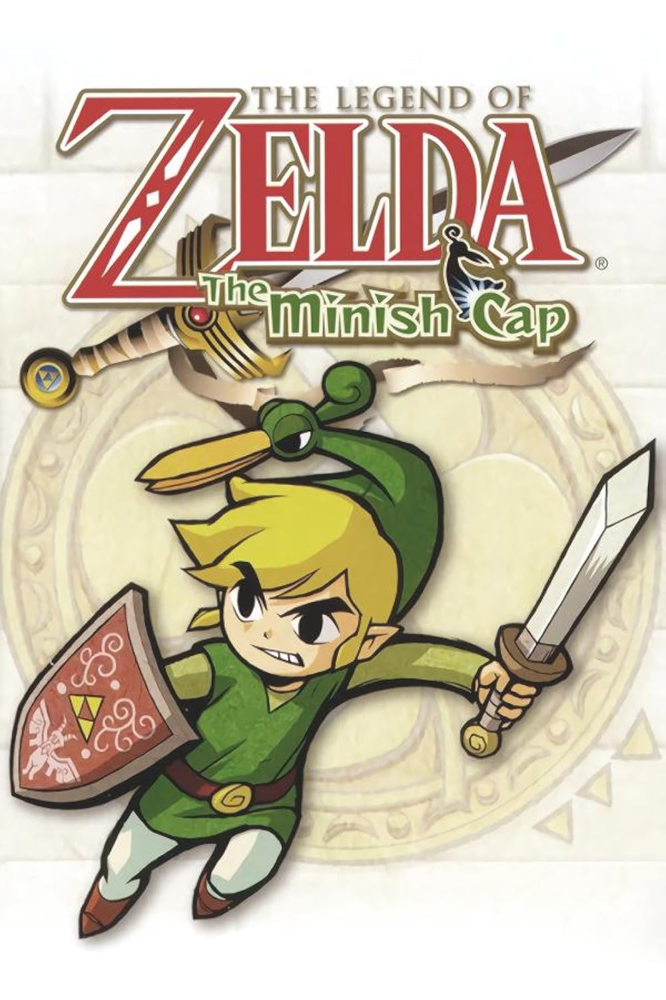
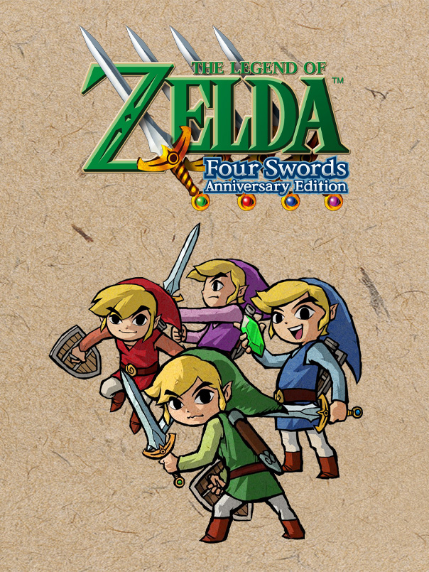

The legend of zelda: Skyward Sword
Siglos antes de los acontecimientos del juego, la Diosa Hylia, protectora de la Trifuerza, luchó contra un gran mal que amenaza con destruir el mundo entero. Para proteger a la raza de los seres humanos de ser aniquilados, los envió lejos, por encima de las nubes, elevando la tierra. Junto con el resto de razas del mundo, Hylia combatió las fuerzas malignas oscuras, y finalmente logró sellar el poder maligno. La leyenda de la diosa se transmitió de generación en generación entre los seres humanos que llegaron a vivir en Altárea, el centro de la civilización humana en el cielo.
Siglos más tarde, Link, un joven residente de Altárea y estudiante de la Academia de Caballeros, tiene el objetivo de convertirse en uno de los Caballeros de Altárea, protectores de las personas que residen en el cielo. Todos los habitantes de Altárea tienen su propio pelícaro, aves poderosas que los llevan en sus espaldas con las que pueden surcar los cielos. Link es un experto jinete de aves y posee un raro pelícaro de color rojo. El juego comienza cuando está a punto de iniciarse el Torneo Celeste. El ganador del torneo pasará al grado superior de la Academia de Caballeros y recibirá un paracaídas de parte de Zelda, amiga de la infancia de Link y hija de Gaépora, director de la academia.
Link y Zelda realizan la ceremonia al ganador desde lo alto de la Efigie de la Diosa, donde Link recibe el paracaídas; después, los dos pasean por el cielo en sus respectivas aves. Durante el paseo, sin embargo, un tornado gigante aparece de la nada, derribando a Zelda y Link de sus monturas, enviando a Zelda directamente a la tierra debajo de las nubes, mientras que Link queda inconsciente. Link sueña con una luz azul misteriosa y de cómo Zelda era tragada por el tornado, antes de despertar en su cama para ver de pie a Gaépora en su habitación. Al ser preguntado, informa a Gaépora lo que le ha pasado a Zelda y Gaépora hace reposar a Link hasta la mañana siguiente cuando la noche no entorpezca la búsqueda de Zelda.
Poco después de que Gaépora se marche de la habitación, Link oye un sonido misterioso y sale de su habitación para encontrar la misma figura azul relacionada con el sueño. Él sigue a está figura hasta la Efigie de la Diosa, donde se abre una puerta oculta que conduce a una cámara en el interior de la estatua. La figura se presenta como Fay, un espíritu que reside dentro de la Espada Divina consagrada allí; Fay le dice a Link que él es el elegido por la diosa para completar la tarea de esta. Link retira la Espada Divina de su pedestal y concentra el poder en la hoja, desatando una energía mágica que activa un símbolo de la diosa en las inmediaciones. Esto, a su vez, activa las litografías, que proporcionaran la apertura de un camino a través de la barrera de nubes que conduce a una región de las Tierras Inferiores, donde Fay sospecha que se puede encontrar a Zelda. Link emprende esta tarea, aunque para su aventura, se le da un uniforme de caballero. Link surca los cielos y se introduce en la apertura abierta.

The legend of zelda: Minish cap
Hace mucho tiempo, cuando Hyrule estaba a punto de ser consumido por la oscuridad, los pequeños Minish descendieron del cielo, y otorgaron a un joven vestido de verde la legendaria Espada Minish y una brillante luz dorada.
Con sabiduría y coraje, el joven héroe selló a la oscuridad en un cofre y trajo la paz a la tierra. Cada 100 años, la puerta de enlace entre el mundo de los humanos y los Minish se abre. Anualmente se celebra en Hyrule una gran feria y un torneo de lucha con espada, llamándose a este evento Festival Minish.
En uno de los días del festival, la princesa de Hyrule, Zelda, se escapa de Castillo de Hyrule a visitar a su amigo de la infancia, Link. Este último pide permiso a su abuelo, el herrero real, Smith, el cual pide a Link que lleve una espada que él creó para el rey de Hyrule como premio para el ganador del torneo. Los dos jóvenes van a la Ciudadela de Hyrule para participar en las festividades. Después de participar en un sorteo donde la Princesa Zelda gana un pequeño escudo que da a Link, ambos proceden al castillo, sin embargo, su camino está bloqueado por un Matorral Deku. Link lo derrota y los dos continúan, alcanzando los jardines del castillo, donde Zelda y Link se unen al ministro Impa y el Rey para dar al ganador del torneo la espada de Smith y permitir que toque la sagrada Espada Minish, el sello que mantiene cerrado el Cofre Sellado. Sin embargo, se revela que el ganador, Vaati, tiene malas intenciones y rompe la Espada Minish, abriendo el cofre y liberando los monstruos encerrados en él. Luego se vuelve sobre la princesa Zelda y la convierte en piedra, huyendo finalmente de la zona.
En el Castillo de Hyrule, el Rey Daphness, Smith e Impa, se reúnen con Link para discutir cómo revivir a Zelda. Si la Espada Minish fuese utilizable, podría romper la maldición, sin embargo, como no lo es, otros medios se deben tomar para reanimarla. El Rey Daltus explica que los Minish podrían ser capaces de reforjar la hoja, pero también revela que sólo son visibles para los niños. Smith ofrece la ayuda de Link al rey para dicha misión y se le da la espada Smith y un mapa. El rey le dice a Link que debe buscar a los Minish en el Bosque Minish.

The legend of zelda: foud Swords
De acuerdo con el prólogo, la tierra de Hyrule fue atacada una vez por un brujo conocido como Vaati. El brujo atacó numerosas aldeas en todo el país y secuestro a varias doncellas. Vaati luego llevo a las doncellas capturadas a su palacio. Una serie de héroes trataron de derrotar a Vaati y salvar a las doncellas, pero todos fracasaron, hasta que un joven salió de los profundos bosques de Hyrule y puso fin al reinado de Vaati.
Cuando las doncellas contaron al pueblo de Hyrule como el joven guerrero con su espada se dividió en cuatro guerreros, que cooperaron para derrotar a Vaati y sellarle en el interior de la espada. Aunque la gente no creyó su historia, sin embargo, estaban intrigados por ella, y la espada del muchacho llegó a ser conocido como la Espada Cuádruple. Como la leyenda de la espada y sus habilidades tomo fama, la gente construyó un santuario para proteger la espada.
Al inicio del juego, la Princesa Zelda detecta una perturbación en el sello puesto en la Espada Cuádruple, y viaja con su amigo Link al Santuario de la Espada Cuádruple para investigar. Zelda al acercarse a la Espada Cuádruple, el sello se desvanece, y la habitación se envuelve en la oscuridad. Vaati, cuyo sello había sido roto, se revela y se fuga con la princesa a su palacio, pensando en convertirla en su novia. Antes de partir, Vaati deja inconsciente a Link. Cuando Link vuelve en sí, tres hadas comparecer ante él. Instruyen a Link para usar la espada, y al cogerla, Link se divide en cuatro copias de sí mismo, indistinguibles unos de otros, aparte de por el color de su ropa.
Con el fin de tener acceso al Palacio de Vaati, los cuatro Link deben buscar tres a las tres Grandes Hadas, al demostrar su valor a las Grandes Hadas mediante la recopilación de rupias repartidas por todo Hyrule, se le otorgará las tres Llaves de Plata necesarias para entrar al Palacio de Vaati. Tras obtener las llaves de plata, los cuatro Link entran al Palacio de Vaati, en el que se enfrentan a Vaati. Finalmente, Vaati es debilitado y sellado en el interior de la Espada Cuádruple una vez más. Con la princesa liberada de su cautiverio, los cuatro Link devuelven la Espada Cuádruple a su pedestal, unificándose los cuatro jóvenes en uno, restableciendo su estado anterior.